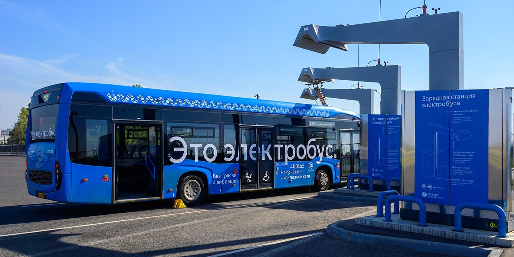

Электробусы могут зарядиться почти на 20 процентах конечных станций Мосгортранса
 Пресс-служба Департамента транспорта и развития дорожно-транспортной инфраструктуры города МосквыРасширение сети зарядных станций помогает еще быстрее выпускать на маршруты современную технику на электрической тяге
В столице уже на 28 конечных станциях наземного городского транспорта электробусы могут зарядиться для дальнейшего движения. Об этом сообщил заместитель Мэра Москвы по вопросам транспорта и промышленности Максим Ликсутов.
«В Москве действует 160 конечных станций для автобусов и электробусов. Уже почти 20 процентов из них оборудованы зарядками для экологичной техники. На территории станций работают системы безопасности, есть помещения, где водители могут поесть и отдохнуть между выходами на маршрут. Продолжаем повышать эффективность городского транспорта по поручению Сергея Собянина», — отметил Максим Ликсутов.
Обновление и строительство конечных станций для автобусов и электробусов делает работу транспорта еще эффективнее. Так, техника начинает маршрут сразу в нужном районе — ближе к пассажирам. Время ожидания транспорта для них уменьшается. Автобусам и электробусам не нужно доезжать до начальной точки маршрута или возвращаться в парк на стоянку. На огороженной разворотной площадке у водителей достаточно места, чтобы совершить маневр и снова выйти на линию. Для этого также не приходится использовать проезжую часть. На конечных станциях есть комнаты отдыха и приема пищи, душевые и медпункты — для водителей, от самочувствия которых зависит безопасность пассажиров, создаются комфортные условия труда.
Помимо конечных станций, электробусы обслуживают на 10 площадках Мосгортранса. Среди них три инновационных парка, которые оборудованы по последнему слову техники. Это «Красная Пахра» в ТиНАО, «Митино» в СЗАО и «Салтыковка» в ВАО.
Развитие зарядной инфраструктуры помогает еще быстрее выпускать на маршруты современную технику на электрической тяге. В Москве уже более 340 зарядных станций для электробусов, которые установлены в парках, на маршрутах и конечных станциях
Москва — в числе мировых лидеров по развитию и использованию электротранспорта, а также занимает первое место в Европе по количеству электробусов. В столице работает уже две тысячи самых современных электробусов «КамАЗ» и «ЛиАЗ». По соотношению цены и качества эта инновационная российская техника является одной из лучших в мире. Сегодня электробусы обслуживают свыше 140 маршрутов.
C 2022 года в столицу поставляют машины улучшенной комплектации. В них есть адаптивное освещение салона, увеличенный передний указатель маршрута. Оптимальную температуру в салоне поддерживает электрический отопитель. Запас хода вырос с 40–50 до 80 километров. При этом вес электробуса остался прежним. В 2024 году на линию выходят машины производства ПАО «КамАЗ» и ЛиАЗ в обновленном, еще более современном дизайне.
Электробусы закупают по контрактам жизненного цикла. Это означает, что в течение 15 лет компании-производители самостоятельно обеспечивают исправную работу техники на городских маршрутах
Замена одного автобуса на электробус снижает выбросы углекислого газа на 60 тонн в год. Благодаря переходу на электробусы с 2018-го по 2023-й удалось сократить такие выбросы на 130 тысяч тонн
Вам будет интересно
Мой район
Новости и афиша, достопримечательности, планы развития